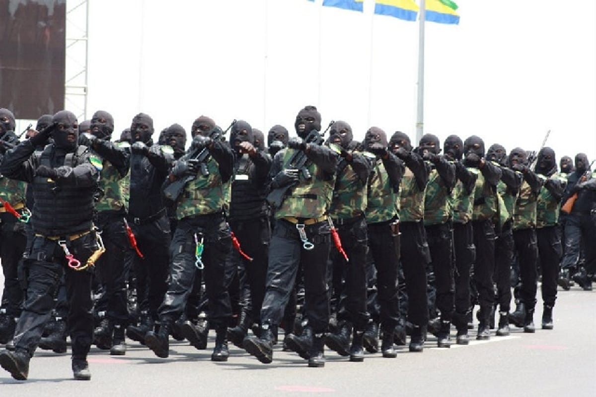

Les Forces de Police Nationale
La force de sécurité intérieure du Gabon, chargée de la sécurité des personnes et de la protection des biens.
Une institution au service de la population
Les Forces de Police Nationale (FPN) sont nées le 18 avril 1978 de la transformation de la Direction générale de la Sûreté nationale. Elles relèvent du ministère de l’Intérieur, de la Sécurité et de la Décentralisation.
Placées sous l’autorité d’un Commandant en chef, elles regroupent la Préfecture de police du Grand Libreville, la Police judiciaire, la Police technique et scientifique, l’OCLAD, les sections gabonaises d’Interpol et d’Afripol, ainsi que les directions de la sécurité urbaine, de la sécurité publique, des services administratifs et de la Documentation et de l’Immigration.

Protéger, prévenir, servir
Sécurité des personnes
Intervention, patrouilles et présence sur le terrain, jour et nuit.
Enquête judiciaire
Recherche des auteurs d’infractions et assistance à la justice.
Prévention
Conseils et actions auprès de la population, des écoles et des quartiers.
Documents d’identité
Passeports, cartes de séjour, visas et cartes d’identité via la DGDI.
Directions et services
Un commandement unique et des directions spécialisées.
Ceux qui dirigent
Responsables cités dans la presse et les communiqués officiels (2026). À valider par le cabinet avant publication.
De 1978 à la « police 2.0 »
Création des Forces de Police Nationale, issues de la Direction générale de la Sûreté nationale.
Tournée du ministre dans les directions et présentation des projets de numérisation : SITA et FARIAJ.
Remise de nouveaux équipements et véhicules par le Président de la République.
Loi de programmation de la sécurité : équipements, infrastructures et formation.